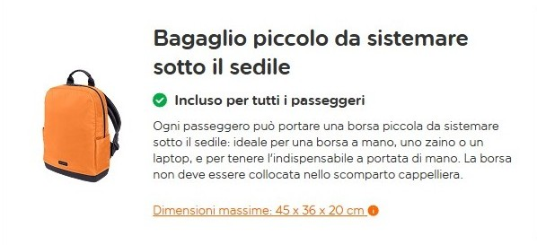

Informazioni preliminari
Tutto ciò che conviene verificare prima della partenza.
Dati principali
| Alloggio | 121 - Urban Gorgeous Flat in Montorgueil, Rue de Palestro 39, 75002 Paris |
|---|---|
| Voli | 1.040,34 € totali |
| Appartamento | 1.605,31 € totali |
| Totale noto | 2.645,65 €; 377,95 € a persona |
| Check-in standard | Dalle 16:00 |
| Early check-in | Da richiedere il giorno prima, non garantito |
| Deposito bagagli | 9 Rue du Caire, 9:00–18:00; 5 € valigia, 3 € zaino |
| Deposito cauzionale | 500 €, addebitato 14 giorni prima |
| Rimborso cauzione | Entro 7 giorni dal check-out dopo verifica |
Checklist
- Fare il check-in online per tutti.
- Confermare parcheggio e navetta verso Malpensa T2.
- Tenere disponibile la carta per la cauzione.
- Prenotare in anticipo i biglietti con orario per le attrazioni più richieste.
Bagaglio

Il peso massimo consentito è 15 kg, ma il passeggero deve riuscire a sollevarlo e trasportarlo autonomamente.
È consentito portare anche una borsa personale.
Cosa si può mettere
Nel piccolo bagaglio a mano è normalmente possibile inserire:
- vestiti e biancheria;
- scarpe;
- libri, tablet, computer portatile e altri dispositivi elettronici;
- documenti di viaggio, denaro e oggetti di valore;
- medicinali;
- articoli per l’igiene personale;
- cosmetici, rispettando le regole sui liquidi;
- cibo solido;
- bottiglie vuote;
- ombrello;
- cappotto o giacca;
- stampelle;
- bastone da passeggio;
- una normale borsa di prodotti acquistati nell’area aeroportuale dopo i controlli di sicurezza.
easyJet raccomanda di tenere nel bagaglio da cabina medicinali, denaro, oggetti di valore e documenti importanti.
Liquidi, aerosol e gel
Nella maggior parte degli aeroporti, liquidi, aerosol e gel possono essere trasportati nel bagaglio a mano solo se:
- ogni contenitore ha capacità massima di 100 ml;
- tutti i contenitori entrano in un’unica busta trasparente richiudibile;
- la busta misura al massimo 20 × 20 cm;
- il volume complessivo non supera 1.000 ml per passeggero.
Queste regole riguardano, tra gli altri:
- acqua e bevande;
- shampoo e bagnoschiuma;
- dentifricio;
- creme;
- profumi;
- gel;
- deodoranti spray;
- schiuma da barba;
- mascara e cosmetici liquidi;
- medicinali liquidi;
- alimenti liquidi o cremosi.
Le regole possono variare in base all’aeroporto di partenza: alcuni aeroporti hanno introdotto apparecchiature che consentono contenitori più grandi, quindi è necessario controllare anche le indicazioni specifiche dell’aeroporto.
Dopo i controlli di sicurezza è possibile acquistare altri liquidi nell’area partenze e portarli in cabina, purché rispettino le condizioni previste dall’aeroporto e siano adeguatamente confezionati.
Medicinali e articoli sanitari
I medicinali essenziali devono essere trasportati preferibilmente nel bagaglio a mano. Per medicinali liquidi, dispositivi medici o quantità superiori ai normali limiti dei liquidi, è consigliabile portare:
- la confezione originale;
- la prescrizione o una certificazione medica;
- una dichiarazione del medico, soprattutto per medicinali soggetti a controllo;
- la documentazione relativa a eventuali siringhe o dispositivi speciali.
Le autorità aeroportuali possono richiedere controlli aggiuntivi. Per questo, i medicinali importanti non dovrebbero essere messi nel bagaglio da stiva.
Batterie e dispositivi elettronici
Power bank, batterie al litio di ricambio, computer portatili ed e-cigarette devono essere trasportati nel bagaglio a mano e non nella stiva. Le batterie devono essere protette da cortocircuiti e i dispositivi devono essere sistemati in modo da impedirne l’accensione accidentale.
Sono consentiti:
- smartphone;
- tablet;
- computer portatili;
- fotocamere;
- videocamere;
- power bank;
- batterie di ricambio, nel rispetto delle limitazioni applicabili;
- sigarette elettroniche;
- fino a due batterie di ricambio per sigarette elettroniche, secondo le condizioni easyJet.
Le sigarette elettroniche non possono essere utilizzate né ricaricate a bordo. Devono restare completamente spente e protette dall’attivazione involontaria.
Il bagaglio “smart”, cioè dotato di batteria al litio o power bank integrato, è soggetto a regole specifiche. Se viene consegnato in stiva, la batteria deve essere scollegata e rimossa; se non è possibile rimuoverla, easyJet può rifiutare il bagaglio.
Alcol, sigarette e accendini
È possibile portare sigarette nel bagaglio a mano.
Un accendino può essere portato a bordo, ma deve essere tenuto sulla propria persona, ad esempio in tasca, non dentro il bagaglio. I fiammiferi non sono ammessi.
L'alcol acquistato nell'area partenze dopo i controlli può essere portato in cabina se:
- la confezione è ancora chiusa;
- contiene alcol con gradazione inferiore al 70%;
- è dentro la borsa dell'aeroporto oppure nel bagaglio a mano.
Non è consentito bere a bordo alcol portato da casa o acquistato altrove: a bordo si possono consumare solo bevande alcoliche acquistate sull'aereo.
Oggetti consentiti con limitazioni
Sono ammessi:
- pinzette;
- forbici con punta arrotondata e lame inferiori a 6 cm;
- lamette da barba inserite in un involucro di plastica;
- coltelli con lama non superiore a 6 cm;
- strumenti musicali entro le dimensioni del bagaglio autorizzato;
- strumentazione sportiva conforme alle regole easyJet;
- ghiaccio secco fino a 2,5 kg, esclusivamente per conservare prodotti deperibili non classificati come merci pericolose.
Gli strumenti musicali che superano le dimensioni previste possono richiedere un posto acquistato separatamente oppure devono viaggiare in stiva.
Cosa non si può portare
Non è consentito portare in cabina:
- coltelli con lama superiore a 6 cm;
- oggetti taglienti non autorizzati;
- forbici con lame troppo lunghe o non conformi;
- rasoi non protetti;
- fiammiferi;
- armi;
- munizioni;
- esplosivi;
- fuochi d'artificio;
- materiali incendiari;
- sostanze tossiche;
- sostanze corrosive;
- spray o prodotti pericolosi non ammessi;
- fornelli da campeggio;
- contenitori di carburante;
- batterie o power bank non conformi;
- sigarette elettroniche nella stiva;
- dispositivi elettronici con batterie non rimovibili quando il bagaglio smart deve essere imbarcato in stiva;
- strumenti musicali troppo grandi per la cabina senza posto dedicato.
I fornelli da campeggio e i contenitori di carburante non possono essere portati a bordo.
Controlli al gate
easyJet verifica le dimensioni dei bagagli prima dell'imbarco. Se il bagaglio supera le dimensioni massime o non corrisponde all'eventuale franchigia acquistata, può essere trasferito in stiva con addebito di costi.